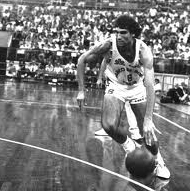

Ai tempi in cui giocavo passavo ogni estate in palestra da solo per migliorare il mio bagaglio tecnico, perché la mia motivazione era quella di essere un giocatore protagonista in campo, essere cioè più competitivo per il campionato successivo.
Quanto avrei voluto ci fosse stato qualcuno ad allenarmi e che mi avesse detto cosa come e perché fare determinate cose!!!
Per questo oggi metto a disposizione le mie competenze, sviluppate ed acquisite in tanti anni di altissimi livelli, per coloro che desiderano allenarsi ad essere protagonisti nel modo di stare in campo.
Ho sviluppato un metodo lavorativo improntato sull'attenzione dei minimi particolari in modo da migliorare i fondamentali in maniera dinamica e la necessaria concentrazione da consentirci qualità e tempestività nelle scelte da fare per essere efficaci.
L'amore che ho per la pallacanestro (per me lo sport più bello che esiste) mi ha fatto dare tanto, ma anche ricevere grandi soddisfazioni. Inoltre mi ha dato modo di vedere che tipo di persone siamo, tirando fuori delle doti e delle qualità che a volte neanche sospettiamo di avere. Per esempio la tenacia con cui sosteniamo le nostre convinzioni, la forza nell'affrontare e nel resistere in situazioni difficili, lo sviluppo della tattica per procurarci dei vantaggi, il credere in se stessi fino in fondo, l'intensità del modo di stare in campo.
Sono solo alcuni esempi che ci derivano da una cosa imprescindibile:
non esistono scorciatoie per imparare. La sola via è il quotidiano costante lavoro che siamo disposti a fare per avere SUCCESSO, dove per «successo» si intende centrare i propri obiettivi.
Alla base di tutti i successi di una squadra c'è la sinergia di un intenso lavoro individuale, coordinato ad un altrettanto intenso lavoro di gruppo.
Infatti il gioco di squadra deve essere inteso come una sinfonia eseguita da un'orchestra, in cui tutti sanno suonare il proprio strumento, leggere lo spartito, e dove regnano armonia e sincronia, cioè la perfetta contemporaneità tra le parti in azione.
«Il nostro obiettivo è la realizzazione del tuo successo»